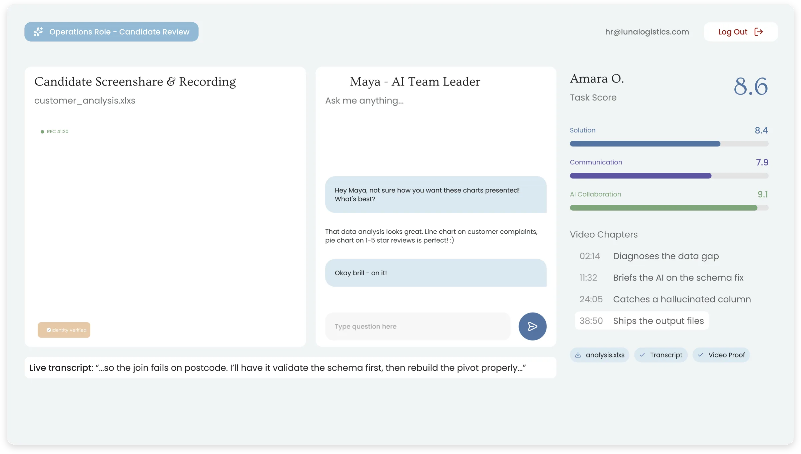

Hundreds of applications.
Six hires you'd bet on.
Fluencyfox sits at the top of your graduate funnel. Every applicant does an hour of the real job using the AI tools they'd have on day one, and you get a ranked shortlist backed by the session recording, the work they shipped, and three scores you weight yourself.

The graduate funnel stopped working the moment AI got good.
Every application reads brilliantly
The same tool wrote thousands of them. The written signal you used to screen on has gone, and the pile still has to get from hundreds down to a handful.
Aptitude tests measure the wrong thing
Numerical and logical reasoning tell you how someone performs alone, against a clock, with the tools taken away. That is not the job any graduate is walking into.
You find out in month three
The ones who interview well and work slowly look identical on day one. Month three is when the gap shows, and by then the seat, the salary and the scheme place have all gone.
Design. Deploy. Decide.
One build with our team, then it runs itself at any volume, whether that is fifty applicants or five thousand.
Design it with us
We build the task around the graduate role you are actually hiring for: the brief, the objective, and the weightings that reflect what a good first six months looks like at your company.
Deploy from your ATS
Move applicants into the assessment stage and each one gets a single-use link. Scores and feedback come straight back into the ATS. No invigilators, no scheduling, no ceiling on numbers.
Decide with evidence
Everyone lands in one dashboard, ranked by three scores weighted your way. Jump the chaptered video straight to the moments that matter instead of reading another cover letter.
“We used the fluency assessor to screen candidates for our graduate forward deployed engineering scheme, helping us find 6 tier 1 hires out of an initial pool of 700.”
Romil Depala · SilverTree Equity
A shortlist you can defend.
Not a percentile against a norm group. The actual hour of work, and the reasoning behind every score in it.
SilverTree Equity’s graduate forward deployed engineering scheme.
The full session, on the record
Whole-screen capture with no sandbox, camera on, voice transcribed throughout. Every tool and every tab they used, chaptered so you can go straight to the decisions.
The work they actually shipped
The finished output, not a description of it. You are reading the thing a graduate would have handed you in their first week.
Three scores, weighted your way
How they solved it, how they communicated, and how they worked with AI. You set the weights before a single applicant sits it, and they apply identically to all of them.
“The test was unique and unlike anything I have ever had to do for job applications. I really liked how it gave us the freedom to approach a problem as we wished using whatever AI tool we want. I like how it was recorded, and we got to show our personality rather than just the results. It was a very fun experience.”
Jay Cushen · Candidate